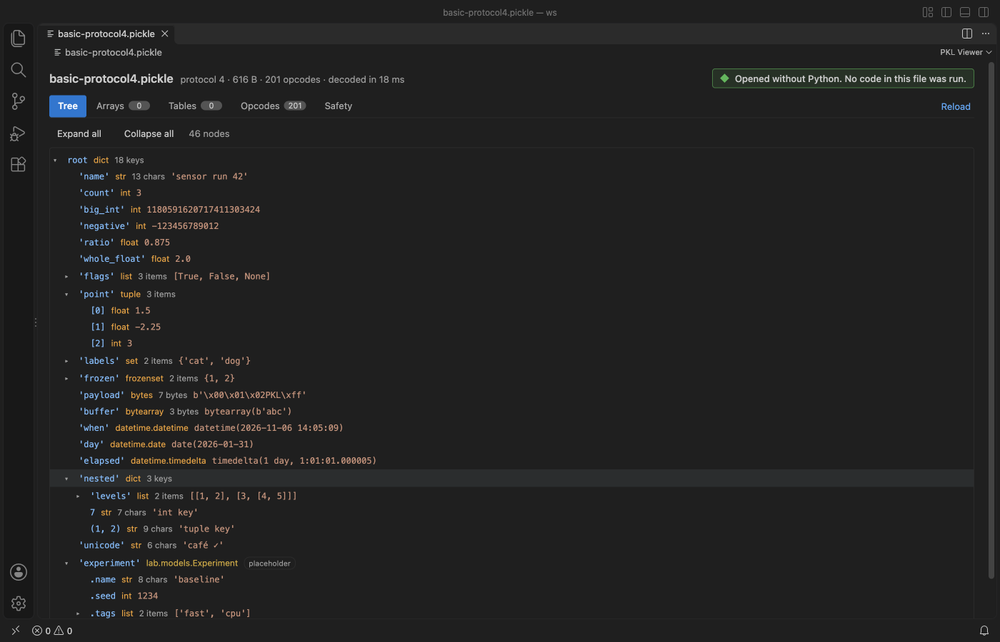

Open files in VS Code and Cursor / Machine learning files
Pickle to JSON with no Python
Open the .pkl file in PKL Viewer and click Export JSON / CSV above the tabs. It saves the whole object as JSON, or every pandas DataFrame and every 1-D or 2-D NumPy array as CSV, with no Python and without running any code in the file. The viewer and its safety check are free. Export to JSON or CSV is a Zovo Pro tool with 3 free tries.
Free, MIT license. Extension ID zovo.zovo-pickle-viewer, version 0.2.2. Needs VS Code 1.90.0 or newer.
Also free from Zovo: NPZ & NPY Viewer, PyTorch & Safetensors, VS Code Marketplace · Open VSX (Cursor, Windsurf).

Steps in VS Code
- Install Pickle Viewer & PKL Viewer from the Marketplace, or press Ctrl+P (Cmd+P on macOS) and run
ext install zovo.zovo-pickle-viewer. - Click the
.pklor.picklefile in the Explorer. For a.pfile, right-click it and pick Open in PKL Viewer. - Check the Safety tab. It lists every name the file would import or call in Python, with risky ones such as
os.systemflagged. - Click Export JSON / CSV above the tabs, or run "PKL Viewer: Export Pickle to JSON or CSV (Zovo Pro)".
- Choose JSON for the whole object, or CSV for every pandas DataFrame and every 1-D or 2-D NumPy array.
- The first 3 runs are free. A try counts only when the tool saves its file.
Where Zovo Pro saves time
Opening pickles is free: the tree with Python types, NumPy arrays with stats and a heatmap, pandas DataFrames as a table (first 1,000 rows), the opcode listing and the safety check. Saving to JSON or CSV is a Pro tool.
The export writes all rows, while the Tables tab shows the first 1,000. Scan a folder for unsafe pickles checks every .pkl, .pickle, .p, .joblib and .dill file, and the pickle inside PyTorch .pt, .pth, .ckpt and .bin checkpoints, and saves one Markdown report with the risky files first.
With Export to JSON or CSV (Zovo Pro)
- Right-click a folder in the Explorer, or run "PKL Viewer: Scan a Folder for Unsafe Pickles and PyTorch Files (Zovo Pro)".
- Open the Markdown report. Risky files come first, with each name Python would import or call and its byte offset.
- Nothing is loaded or run during the scan. It has its own 3 free tries.
Export to JSON or CSV works 3 times on your computer before it asks for a license, and a try counts only when you get a result. Opening a file shows no popup and no countdown.
Zovo Pro costs USD 19 once. It is not a subscription, and it turns on the Pro tools in every Zovo extension, not only Pickle Viewer & PKL Viewer. After a card payment (Stripe) your license key shows on the next page. In VS Code, run "Zovo Pro: Enter Zovo Pro license key" from the Command Palette and paste it. The key is checked on your computer, with no network call. With GitHub Sponsors, pick the "$19 one time" tier, then run "Zovo Pro: I already paid: unlock with GitHub Sponsors" and sign in with the same GitHub account. With PayPal, send USD 19 with "Zovo Pro" in the note and the key comes by email within a day.
A team of 5: USD 59 once, by card or by PayPal. Every rule and every Pro tool is on the Zovo Pro page.
Steps in Cursor, Windsurf or VSCodium
- Open the Extensions view with Ctrl+Shift+X (Cmd+Shift+X on macOS).
- Search for
zovo.zovo-pickle-viewerand click Install. Cursor, Windsurf and VSCodium install from Open VSX, where it is published aszovo/zovo-pickle-viewer. - If your editor has no gallery, download the .vsix from the Open VSX page and run "Extensions: Install from VSIX...".
- Then use it the same way as in VS Code.
What Pickle Viewer & PKL Viewer handles
- No code runs. The file is decoded by a reader that never imports or calls anything, so a hostile pickle cannot touch your machine.
- Pickle protocols 0 to 5, including Python 2 strings.
- NumPy arrays (protocol 2
_reconstructand protocol 5_frombuffer) and pandas DataFrames in the pandas 2.x and older block manager layouts. - In the JSON, NaN and infinity become null, bytes become
{"$bytes": base64}, and a class the viewer cannot rebuild becomes{"$class": "module.Name", ...}with what the file stores. - CSV output covers the "pkl to csv" job: every DataFrame and every 1-D or 2-D array as its own file with all rows.
What it does not do
- Files over 512 MB are not read (setting
pickleViewer.maxFileMB, up to 2048). - Joblib files with compressed arrays, PyTorch
.ptzip archives and.npyfiles are not opened. - Your own classes are not rebuilt. They come out as
$classplaceholders with their stored attributes. - A clean safety list is not a promise that a file is safe, so only load pickles you trust in Python.
Other options
- Python pickle and json.dumps(default=str). Free and built in:
json.dumps(pickle.load(f), default=str).pickle.loadruns the code the file asks for, so use it only for files you trust. The better choice when your own classes must be rebuilt. - jsonpickle. Free Python library that turns Python objects into JSON and back. You still have to unpickle the file first, which runs its code.
- pandas read_pickle and to_csv. Free:
pd.read_pickle("data.pkl").to_csv("data.csv")for a DataFrame. It unpickles the file, so the same trust rule applies. - fickling. Free command-line tool and library from Trail of Bits that analyses pickles for unsafe calls without loading them. Use it for safety scans in scripts.
Install counts and Open VSX status were checked on 10 November 2026. Descriptions in quotes are the extensions' own.
Questions
Does it work in Cursor or Windsurf?
Cursor and Windsurf install extensions from Open VSX. Search for PKL Viewer in their Extensions view and install it there.
Is it safe to open a pickle from the internet?
PKL Viewer never imports or calls anything in the file, so opening it runs no code. The Safety tab lists what Python would import or call. A clean list is still not a promise, so only load pickles you trust in Python.
Does it need Python installed?
No. The viewer and the export work without Python.
Is my data sent anywhere?
No. PKL Viewer works offline, makes no network calls and sends no telemetry.
Can I convert a pkl file to CSV?
Yes. Export to JSON or CSV saves every pandas DataFrame and every 1-D or 2-D NumPy array in the file as a CSV file with all rows.
More about Pickle Viewer & PKL Viewer
Read the Pickle Viewer & PKL Viewer page for every feature and setting, or the source code on GitHub.
Related guides
- NPZ & NPY Viewer, PyTorch & Safetensors on the VS Code Marketplace (also on Open VSX). Shows arrays, shapes and values from .npy, .npz, .pth, GGUF and safetensors files.
- Open a .pkl pickle file in VS Code without running it
- View .npy and .npz NumPy files in VS Code
- A safetensors viewer for VS Code
- View a JSONL file as a table in VS Code
Support this work
If this extension saves you time, you can support the work on GitHub Sponsors. Monthly tiers start at $5, and one-time tiers start at $15. Sponsorship is optional, and the tool works the same without it.
Need your format supported?
Open a format request with a sample file, and I reply there whether it can be done. For USD 299 once, through this GitHub Sponsors tier, I add your file format or a missing feature to this extension, with tests, within 7 days.